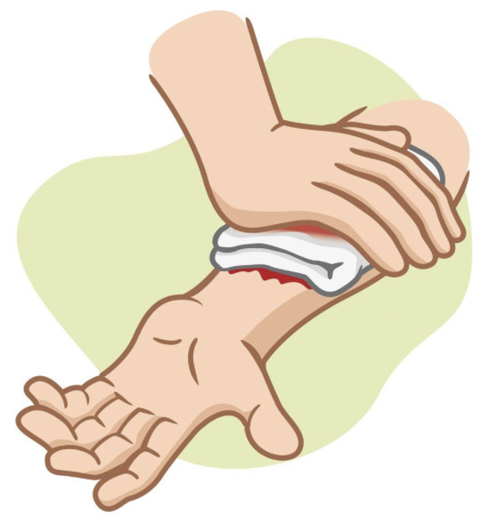

Schwere äußere und innere Blutungen sind lebensbedrohlich und erfordern sofortige Erste-Hilfe-Maßnahmen. Wenn der Körper zu viel Blut verliert, kann das Kreislaufsystem wichtige Organe nicht mehr mit Sauerstoff versorgen – ein Schock oder sogar der Tod können die Folge sein. Häufige Ursachen sind Verkehrsunfälle, Stich- und Schussverletzungen oder Verletzungen durch Maschinen.
Auch ohne sichtbare Wunden kann eine starke innere Blutung bestehen – in beiden Fällen ist schnelles Handeln entscheidend.
Direkten Druck ausüben: Fordern Sie die betroffene Person auf, selbst mit den Händen Druck auf die blutende Stelle auszuüben. Das senkt das Infektionsrisiko und schützt Sie selbst.
Person hinlegen lassen: Helfen Sie der verletzten Person, sich hinzulegen. Behalten Sie Ruhe und setzen Sie sofort den Notruf ab.
Verband anlegen und Druck erhöhen: Decken Sie die Wunde mit einem Verband ab und üben Sie kräftigen, anhaltenden Druck aus. Wenn das Blut durch den ersten Verband dringt, legen Sie einen zweiten darüber – niemals den ersten entfernen!
Barriere nutzen: Verwenden Sie nach Möglichkeit eine Barriere (z. B. Handschuhe, Tuch, Plastikfolie), um direkten Kontakt mit der Wunde zu vermeiden.
Aderpresse oder hämostatischer Verband (wenn verfügbar): Wenn der Blutfluss durch direkten Druck nicht gestoppt werden kann und die Wunde sich an einem Arm oder Bein befindet, kann eine Aderpresse angelegt werden – aber nur, wenn Sie dazu geschult sind. Andernfalls verwenden Sie, falls vorhanden, einen hämostatischen Verband und drücken Sie weiter fest auf die Wunde.
Eine Aderpresse (auch Tourniquet genannt) ist ein spezielles Druckband, das oberhalb einer stark blutenden Wunde am Arm oder Bein angelegt wird. Sie unterbricht den Blutfluss durch die Hauptarterie, um lebensbedrohliche Blutungen zu stoppen. Die Anwendung ist effektiv, aber nur bei schwersten Blutungen und mit Schulung empfohlen – unsachgemäßer Einsatz kann das Gewebe schädigen.
Ein hämostatischer Verband enthält spezielle Wirkstoffe (z. B. Chitosan oder Zeolith), die die Blutgerinnung beschleunigen. Er wird direkt auf die Wunde gelegt, besonders wenn starker Blutfluss durch normalen Druckverband nicht gestoppt werden kann. Solche Verbände sind in der professionellen Notfallmedizin und im Militär im Einsatz – sie können lebensrettend sein.
Fremdkörper in der Wunde:
Ist ein Gegenstand wie z. B. ein Messer in der Wunde, entfernen Sie ihn auf keinen Fall!
Stattdessen:
Atmung prüfen: Wenn die Person bewusstlos wird, öffnen Sie die Atemwege und kontrollieren Sie die Atmung. Bei fehlender oder abnormer Atmung beginnen Sie mit der Herz-Lungen-Wiederbelebung.
Merke: Starke Blutungen immer ernst nehmen: Druck ausüben, Verband anlegen, Hilfe holen. Entfernen Sie keine Fremdkörper aus der Wunde. Ihre eigene Sicherheit hat immer oberste Priorität – besonders in Katastrophen- oder Gefahrensituationen.